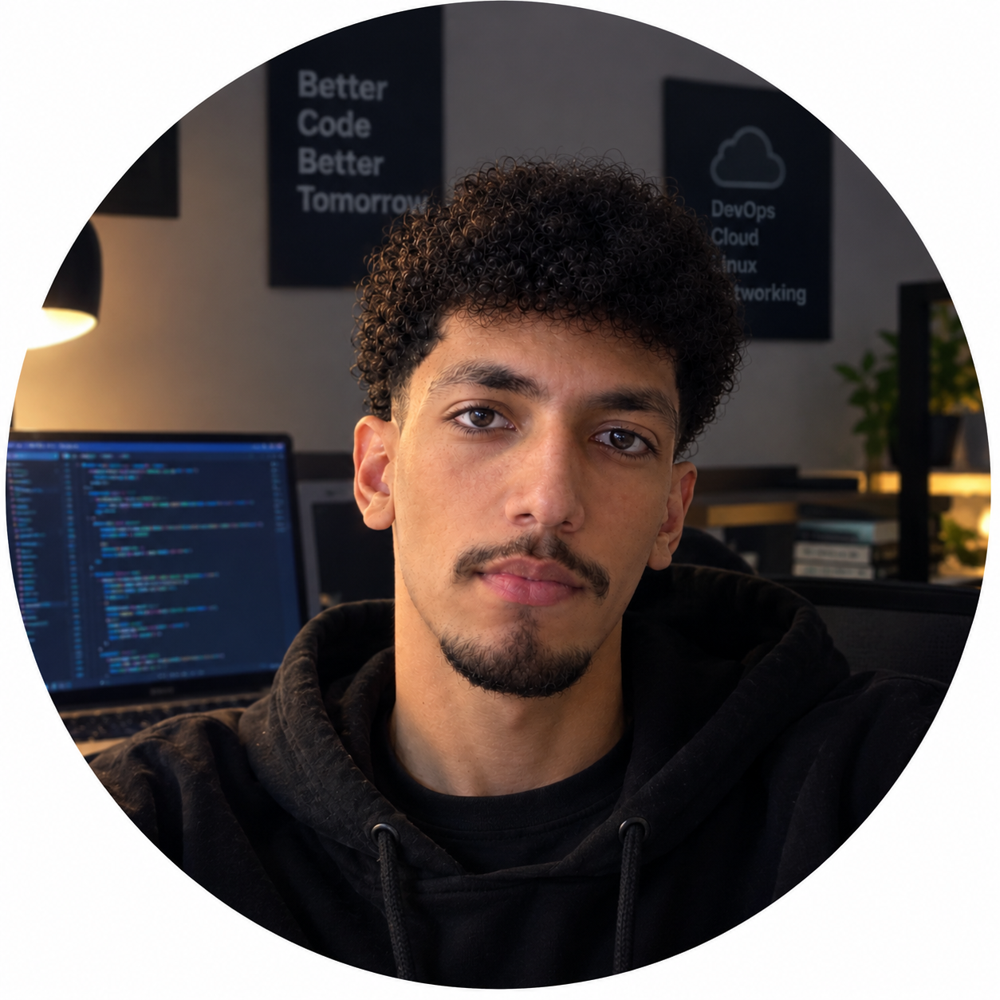

Computer Science and AI student at Capital University, looking for a software engineering internship.
Better code. Better tomorrow.

About me
I’m a second-year Computer Science and Artificial Intelligence student with a solid foundation in C, C++, Java, Python and JavaScript. I enjoy turning core ideas, like data structures, algorithms and databases, into working software.
I learn fast, stay disciplined under pressure and put the team first. My university group projects and programming competitions are where I practise all three.
- Studying
- Computer Science and Artificial Intelligence
- University
- Faculty of Computers and Artificial Intelligence, Capital University
- Graduating
- 2029
- Based in
- Giza, Egypt
- Looking for
- A software engineering internship
Skills
Languages
OOP in Java
Data structures
Databases
Web and networks
Working style
Data structures, hands-on
I’ve implemented linked lists, stacks, queues, trees and hash tables in C. Here’s a stack you can play with.
Experience and activities
University group projects
Designed and delivered team software projects, applying OOP, data structures and algorithms to shared deliverables.
Programming competitions
Competed in timed contests that sharpen algorithmic thinking and problem solving under pressure.
Self-directed learning
Building practical, job-ready skills through online courses and hands-on practice.
Professional development
Completed online courses in English proficiency and personal development.
Education and languages
B.Sc. Computer Science and Artificial Intelligence
Faculty of Computers and Artificial Intelligence, Capital University, Cairo, Egypt. Expected 2029.
Let’s talk
I’m open to software engineering internships. The fastest way to reach me is email.
mm07anaf9@gmail.com